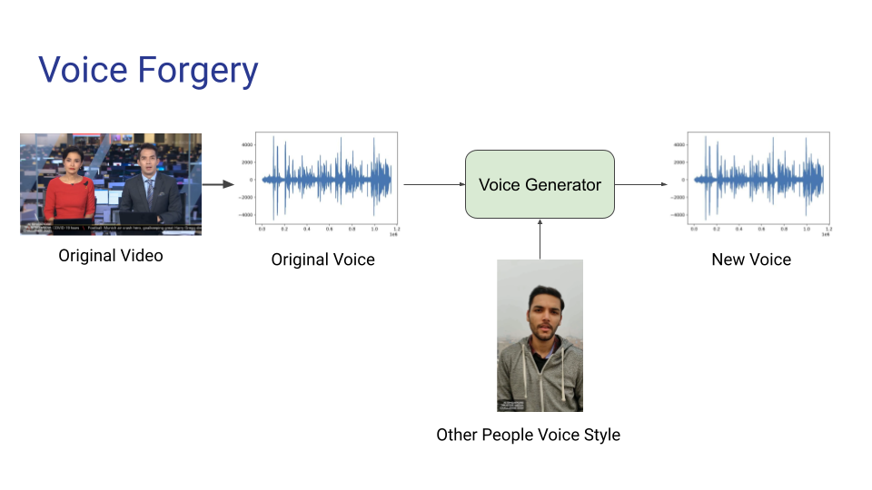
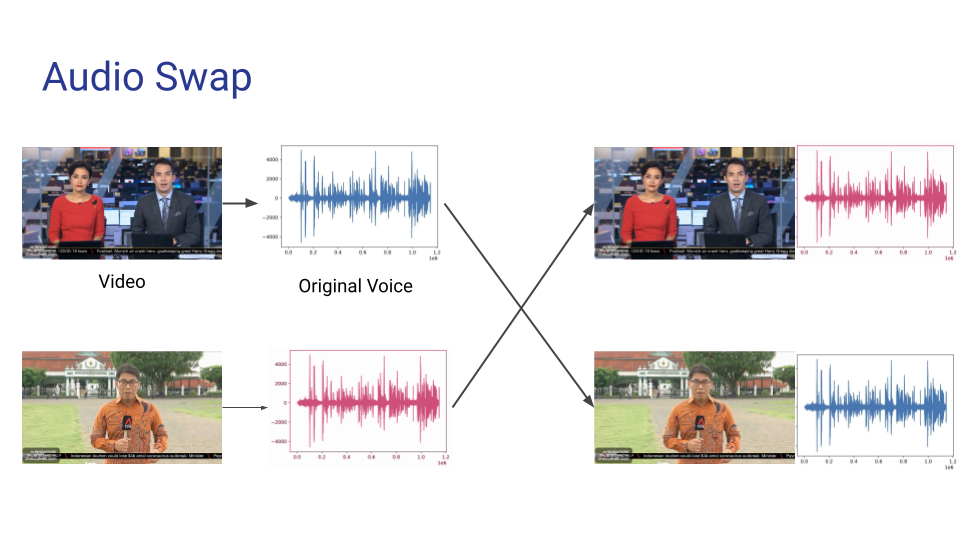
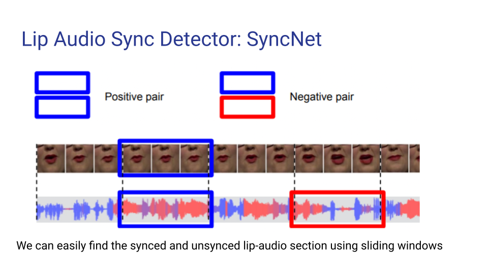
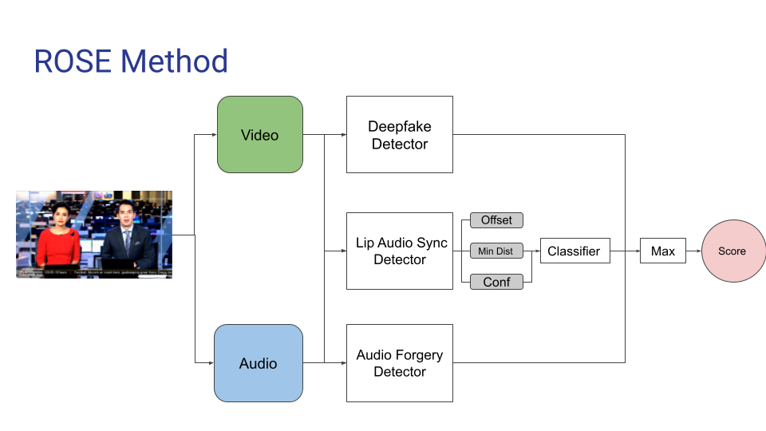
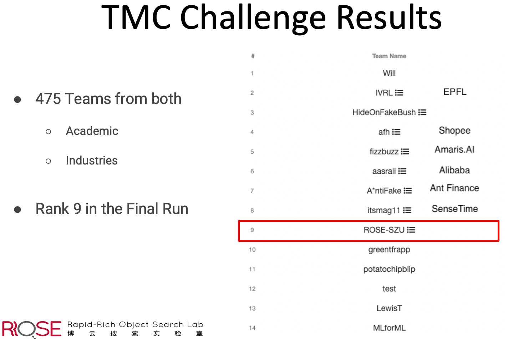

Fake media is an existential threat to societies today. AI Singapore launched the Trusted Media Challenge to test solutions and explore how AI technologies can combat fake media. This challenge focuses on the detection of audiovisual counterfeit media, where both video and audio modalities may be modified.
Our ROSE Lab team categorized the problem into 3 sub-problems and developed 3 individual models:
1. Deepfake Detection
Deepfakes use deep learning AI to replace the likeness of one person with another in video and digital media. Our deepfake model uses EfficientNet as a backbone classifier to differentiate natural faces from deepfake faces.
2. Audio and Voice Forgery Detection
Voice forgery involves analyzing the voice characteristics of a target person and manipulating the original voice to sound like them. We convert the voice signal into MEL and MFCC spectrograms to detect any presence of tampering or forgery.

3. Audio Swap Detection
Audio swap involves randomly swapping the audio of two videos. To detect this, we analyze the consistency of the voice signal and its corresponding lip motion using a refined SyncNet model with a 20-frame sliding window, producing a confidence score, distance score, and estimated offset time.


Overall System
The overall system combines 3 individual model outputs (Deepfake Detection, Audio Forgery Detection, and Lip-Audio Sync Detector) and returns a unified confidence score.

